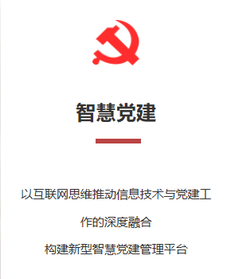
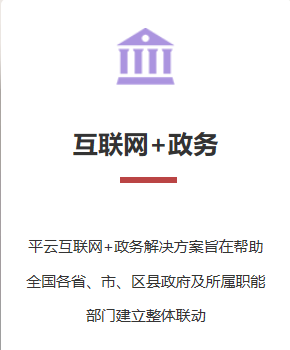
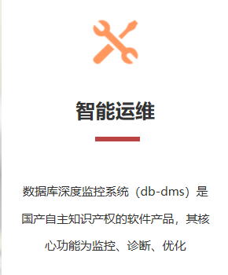

- 2019年04月06日【智慧党建】智慧党建引领，政协释放新活力
- 2019年04月06日【智慧党建】＂智慧党建+志愿服务＂模式 助推社
- 2019年04月06日【智慧党建】“怀府红云”为基层智慧党建减负
- 2019年04月06日【智慧党建】“智慧党建+帮扶”助推驯鹿文化泽
- 2019年04月05日【智慧党建】平云智慧党建平台实现党建+战略
- 2019年04月05日【智慧党建】平云智慧党建建设之路
- 2019年04月05日【智慧党建】哇!这款机器人竟然会讲党课、唱红
- 2019年04月04日【智慧党建】龙湾组合拳 提升全区机关智慧党建
- 2019年04月04日【智慧党建】智慧党建引领促脱贫 携手踏上致富
- 2019年04月04日【智慧党建】娄底市中心医院召开智慧党建工作
- 2019年04月04日【智慧党建】智慧党建助力妇联工作
- 2019年04月04日【智慧党建】各级党组织书记及智慧党建专干缅
- 2019年04月04日【智慧党建】村主职干部培训暨智慧党建基础工
- 2019年04月03日【智慧党建】法院召开智慧党建工作“以案促改
- 2019年04月03日【智慧党建】开展“智慧党建引领 村企联建”助
- 2019年04月03日【智慧党建】智慧党建观摩促交流 示范引领再提
- 2019年04月03日【智慧党建】智慧党建工作领导小组会议召开
- 2019年04月03日【智慧党建】强化党务工作能力 筑牢智慧党建工
- 2019年04月02日【智慧党建】智慧党建暨纪检监察、政法工作会
- 2019年04月02日【智慧党建】建设智慧党建大数据平台 常态监督